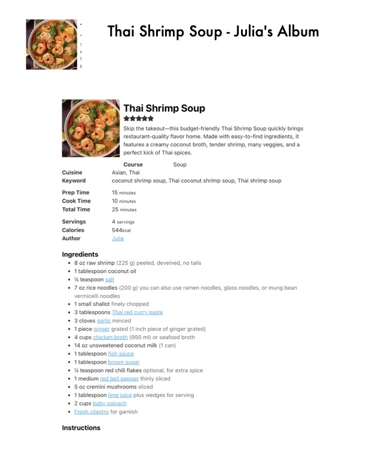

Thai Shrimp Soup - Julia's Album

Original cookbook page 795
Ingredients
- 80z raw shrimp (225 g) peeled, deveined, no tails
- 1 tablespoon coconut oil
- e % teaspoon salt
- 7 0z rice noodles (200 g) you can also use ramen noodles, glass noodles, or mung bean
- vermicelli noodles
- e 1small shallot finely chopped
- 3 tablespoons Thai red curry paste
- 3 cloves garlic minced
- 1 piece ginger grated (1 inch piece of ginger grated)
- Acups chicken broth (950 ml) or seafood broth
- 14 oz unsweetened coconut milk (1 can)
- 1tablespoon fish sauce
- 1 tablespoon brown sugar
- e % teaspoon red chili flakes optional, for extra spice
- 1 medium red bell pepper thinly sliced
- 5o0zcremini mushrooms sliced
- 1tablespoon lime juice plus wedges for serving
- 2cups baby spinach
- Fresh cilantro for garnish
Instructions
- Skip the takeout—this budget-friendly Thai Shrimp Soup quickly brings restaurant-quality flavor home.
- Course Soup Cuisine Asian, Thai Keyword coconut shrimp soup, Thai coconut shrimp soup, Thai shrimp soup Prep Time 15 minutes Cook Time 10 minutes Total Time 25 minutes Servings 4 servings Calories 544kcal Author Julia
- Ingredients 80z raw shrimp (225 g) peeled, deveined, no tails e 1 tablespoon coconut oil e % teaspoon salt 7 0z rice noodles (200 g) you can also use ramen noodles, glass noodles, or mung bean vermicelli noodles e 1small shallot finely chopped e 3 tablespoons Thai red curry paste 3 cloves garlic minced 1 piece ginger grated (1 inch piece of ginger grated) Acups chicken broth (950 ml) or seafood broth e 14 oz unsweetened coconut milk (1 can) e 1tablespoon fish sauce 1 tablespoon brown sugar e % teaspoon red chili flakes optional, for extra spice 1 medium red bell pepper thinly sliced e 5o0zcremini mushrooms sliced e 1tablespoon lime juice plus wedges for serving e 2cups baby spinach e Fresh cilantro for garnish
Recipe #795 from collection